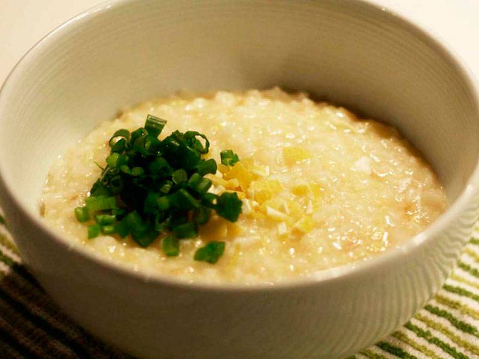

Ojiya

Description
It's just rice porridge.
Ingredients
- 2 cups steamed rice
- 1 cup dashi
- 2 tsp soy sauce
- 1/2 tsp salt
- 1 egg, beaten
Steps
- Combine the rice, dashi, and 1 cup water in a saucepan and bring to a simmer over medium-high heat. Drop the heat to low and cook at a very gentle simmer, stirring occasionally, until most of the liquid has been absorbed or evaporated, about 8 minutes.
- Add another cup of water and cook, stirring occasionally, until the rice has broken down into a thick porridge, about 10 minutes.
- Stir in the soy sauce and salt. Remove the pan from the heat and stir in the beaten egg. Divide between two bowls and garnish as desired.